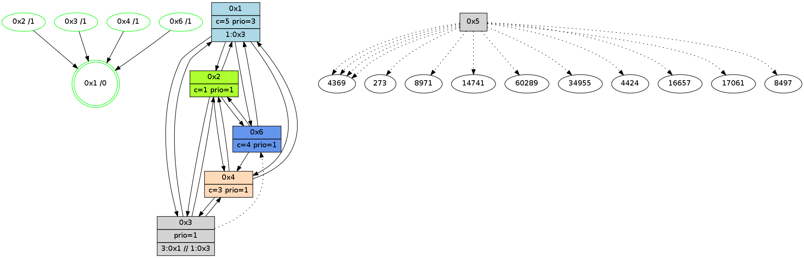

>> << IDX [start] -100 -25 -5 +0 +5 +25 +100 [835.257204056]
 Previous packets
----------------------------------------------------------------------
830.336123 beacon01(adaf) #0 coord=01,02,05,03,04,06 cycle=432.0ms assoc
-- color-indic=1 64 cb dc
830.346084 beacon02(adaf) #0 coord=01,02,05,03,04,06 cycle=432.0ms assoc 64 9a 23
830.356083 beacon05(adaf) #0 coord=01,02,05,03,04,06 cycle=432.0ms assoc 64 3c 09
830.366086 beacon03(adaf) #0 coord=01,02,05,03,04,06 cycle=432.0ms assoc 64 a0 2d
830.376084 beacon04(adaf) #0 coord=01,02,05,03,04,06 cycle=432.0ms assoc 64 06 07
830.386085 beacon06(adaf) #0 coord=01,02,05,03,04,06 cycle=432.0ms assoc 64 72 1b
830.398463 [Color(6) seq=60 @0:0 color=4 prio=1 c=0,1,2;3]
----------------------------------------------------------------------
830.828231 beacon01(adaf) #0 coord=01,02,05,03,04,06 cycle=432.0ms assoc
-- color-indic=1 64 86 db
830.838192 beacon02(adaf) #0 coord=01,02,05,03,04,06 cycle=432.0ms assoc 64 d7 24
830.848192 beacon05(adaf) #0 coord=01,02,05,03,04,06 cycle=432.0ms assoc 64 71 0e
830.858193 beacon03(adaf) #0 coord=01,02,05,03,04,06 cycle=432.0ms assoc 64 ed 2a
830.868193 beacon04(adaf) #0 coord=01,02,05,03,04,06 cycle=432.0ms assoc 64 4b 00
830.878195 beacon06(adaf) #0 coord=01,02,05,03,04,06 cycle=432.0ms assoc 64 3f 1c
830.892472 [Hello(1): seq=534 sym=2,3,4,6 sysInfo=hasWarning,coloring-mode-on,ColoringModeRequestCalled stat=2:9,13,1,1/3:2,0,2,0/4:2,2,10,2/6:2,10,11,1]
830.894665 [STC(1) #0.78 new-neigh,tree-change,inconsistent-stability,stable,to-color d=0]
830.896228 [Hello(4): seq=635 sym=2,6,1,3 sysInfo=hasWarning,coloring-mode-on,ColoringModeIndicationCalled stat=2:11,1,7,2/6:0,1,1,0/1:11,6,13,1/3:6,4,7,2]
830.900032 [Color(4) seq=61 @0:0 color=3 prio=1 c=0,1,4;2]
830.902171 [Color(1) seq=61 @0:0 prio=3 c=1,3,4;0,2]
830.906226 [Hello(2): seq=1124 sym=6,4,1,3 sysInfo=hasWarning,coloring-mode-on,ColoringModeIndicationCalled stat=6:5,4,11,4/4:12,14,7,2/1:15,3,13,1/3:12,3,7,0]
830.909062 [Color(2) seq=60 @0:0 color=1 prio=1 c=0,2,3,4]
----------------------------------------------------------------------
831.320339 beacon01(adaf) #0 coord=01,02,05,03,04,06 cycle=432.0ms assoc
-- color-indic=1 64 42 b4
831.330299 beacon02(adaf) #0 coord=01,02,05,03,04,06 cycle=432.0ms assoc 64 13 4b
831.340300 beacon05(adaf) #0 coord=01,02,05,03,04,06 cycle=432.0ms assoc 64 b5 61
831.350299 beacon03(adaf) #0 coord=01,02,05,03,04,06 cycle=432.0ms assoc 64 29 45
831.360300 beacon04(adaf) #0 coord=01,02,05,03,04,06 cycle=432.0ms assoc 64 8f 6f
831.370300 beacon06(adaf) #0 coord=01,02,05,03,04,06 cycle=432.0ms assoc 64 fb 73
831.382162 [STC(3)->1 #0.78 new-neigh,tree-change,inconsistent-stability,stable,to-color d=1]
831.384753 [TreeStatus(3)-.->1 #0.78 new-neigh,tree-change,inconsistent-stability,stable child=1]
831.386624 [STC(6)->1 #0.78 new-neigh,tree-change,inconsistent-stability,stable,to-color d=1]
831.389845 [Color(6) seq=61 @0:0 color=4 prio=1 c=0,1,2;3]
----------------------------------------------------------------------
831.812446 beacon01(adaf) #0 coord=01,02,05,03,04,06 cycle=432.0ms assoc
-- color-indic=1 64 0e 04
831.822406 beacon02(adaf) #0 coord=01,02,05,03,04,06 cycle=432.0ms assoc 64 5f fb
831.832407 beacon05(adaf) #0 coord=01,02,05,03,04,06 cycle=432.0ms assoc 64 f9 d1
831.842407 beacon03(adaf) #0 coord=01,02,05,03,04,06 cycle=432.0ms assoc 64 65 f5
831.852408 beacon04(adaf) #0 coord=01,02,05,03,04,06 cycle=432.0ms assoc 64 c3 df
831.862408 beacon06(adaf) #0 coord=01,02,05,03,04,06 cycle=432.0ms assoc 64 b7 c3
831.874175 [Hello(3): seq=634 sym=2,4,1,6 sysInfo=hasWarning stat=2:8,0,7,2/4:5,12,5,2/1:10,10,11,1/6:7,15,3,11]
831.876686 [Hello(2): seq=1125 sym=6,4,1,3 sysInfo=hasWarning,coloring-mode-on,ColoringModeIndicationCalled stat=6:5,5,12,4/4:12,14,7,2/1:15,3,13,1/3:12,3,8,1]
831.878975 [Hello(4): seq=636 sym=2,6,1,3 sysInfo=hasWarning,coloring-mode-on,ColoringModeIndicationCalled stat=2:12,2,7,2/6:0,2,2,0/1:11,7,13,1/3:7,4,8,3]
831.881560 [Color(2) seq=61 @0:0 color=1 prio=1 c=0,2,3,4]
831.883267 [Color(1) seq=62 @0:0 prio=3 c=1,3,4;0,2]
831.886392 [Color(4) seq=62 @0:0 color=3 prio=1 c=0,1,4;2]
----------------------------------------------------------------------
832.304556 beacon01(adaf) #0 coord=01,02,05,03,04,06 cycle=432.0ms assoc
-- color-indic=1 64 ca 6b
832.314516 beacon02(adaf) #0 coord=01,02,05,03,04,06 cycle=432.0ms assoc 64 9b 94
832.324519 beacon05(adaf) #0 coord=01,02,05,03,04,06 cycle=432.0ms assoc 64 3d be
832.334516 beacon03(adaf) #0 coord=01,02,05,03,04,06 cycle=432.0ms assoc 64 a1 9a
832.344518 beacon04(adaf) #0 coord=01,02,05,03,04,06 cycle=432.0ms assoc 64 07 b0
832.354518 beacon06(adaf) #0 coord=01,02,05,03,04,06 cycle=432.0ms assoc 64 73 ac
832.366881 [Color(6) seq=62 @0:0 color=4 prio=1 c=0,1,2;3]
832.370724 [Color(3) seq=32 @0:0 prio=1 >3.@1 c=1,3,4;0,2]
----------------------------------------------------------------------
832.796663 beacon01(adaf) #0 coord=01,02,05,03,04,06 cycle=432.0ms assoc
-- color-indic=1 64 94 0a
832.816624 beacon05(adaf) #0 coord=01,02,05,03,04,06 cycle=432.0ms assoc 64 63 df
832.846625 beacon06(adaf) #0 coord=01,02,05,03,04,06 cycle=432.0ms assoc 64 2d cd
832.858163 [Hello(3): seq=635 sym=2,4,1,6 sysInfo=hasWarning stat=2:9,1,7,2/4:5,13,5,2/1:10,11,11,1/6:7,15,3,11]
832.860833 [Hello(4): seq=637 sym=2,6,1,3 sysInfo=hasWarning,coloring-mode-on,ColoringModeIndicationCalled stat=2:12,2,7,2/6:0,2,2,0/1:11,7,13,1/3:7,5,8,3]
832.863755 [Hello(6): seq=550 sym=4,1,2 sysInfo=hasWarning,coloring-mode-on,ColoringModeIndicationCalled stat=4:1,12,6,2/1:0,0,15,1/2:10,3,11,5]
832.865699 [Color(4) seq=63 @0:0 color=3 prio=1 c=0,1,4;2]
832.869541 [Color(1) seq=63 @0:0 prio=3 >1.@3 >>3.@1 c=1,3,4;0,2]
----------------------------------------------------------------------
833.288772 beacon01(adaf) #0 coord=01,02,05,03,04,06 cycle=432.0ms assoc
-- color-indic=1 64 50 65
833.298732 beacon02(adaf) #0 coord=01,02,05,03,04,06 cycle=432.0ms assoc 64 01 9a
833.308733 beacon05(adaf) #0 coord=01,02,05,03,04,06 cycle=432.0ms assoc 64 a7 b0
833.318733 beacon03(adaf) #0 coord=01,02,05,03,04,06 cycle=432.0ms assoc 64 3b 94
833.328733 beacon04(adaf) #0 coord=01,02,05,03,04,06 cycle=432.0ms assoc 64 9d be
833.338734 beacon06(adaf) #0 coord=01,02,05,03,04,06 cycle=432.0ms assoc 64 e9 a2
833.351157 [Color(6) seq=63 @0:0 color=4 prio=1 c=0,1,2;3]
833.353091 [Hello(2): seq=1126 sym=6,4,1,3 sysInfo=hasWarning,coloring-mode-on,ColoringModeIndicationCalled stat=6:7,5,12,4/4:13,0,7,2/1:15,5,13,1/3:13,4,8,1]
833.354952 [Color(3) seq=33 @0:0 prio=1 >3.@1 >>1.@3 c=1,3,4;0,2]
833.357958 [Color(2) seq=62 @0:0 color=1 prio=1 c=0,2,3,4]
833.359658 [STC(1) #0.79 new-neigh,tree-change,inconsistent-stability,stable,to-color d=0]
----------------------------------------------------------------------
833.780880 beacon01(adaf) #0 coord=01,02,05,03,04,06 cycle=432.0ms assoc
-- color-indic=1 64 1c d5
833.790841 beacon02(adaf) #0 coord=01,02,05,03,04,06 cycle=432.0ms assoc 64 4d 2a
833.800840 beacon05(adaf) #0 coord=01,02,05,03,04,06 cycle=432.0ms assoc 64 eb 00
833.810841 beacon03(adaf) #0 coord=01,02,05,03,04,06 cycle=432.0ms assoc 64 77 24
833.820843 beacon04(adaf) #0 coord=01,02,05,03,04,06 cycle=432.0ms assoc 64 d1 0e
833.830843 beacon06(adaf) #0 coord=01,02,05,03,04,06 cycle=432.0ms assoc 64 a5 12
833.842442 [STC(2)->1 #0.79 new-neigh,tree-change,inconsistent-stability,stable,to-color d=1]
833.844532 [Hello(4): seq=638 sym=2,6,1,3 sysInfo=hasWarning,coloring-mode-on,ColoringModeIndicationCalled stat=2:13,3,7,2/6:0,2,2,0/1:11,8,14,1/3:8,6,8,3]
833.846489 [Hello(6): seq=551 sym=4,1,2 sysInfo=hasWarning,coloring-mode-on,ColoringModeIndicationCalled stat=4:1,13,6,2/1:0,1,0,1/2:11,4,11,5]
833.848303 [Hello(3): seq=636 sym=2,4,1 asym=6 sysInfo=hasWarning stat=2:9,2,7,2/4:6,14,5,2/1:10,12,12,1/6:8,15,3,11]
833.850159 [STC(6)->1 #0.79 new-neigh,tree-change,inconsistent-stability,stable,to-color d=1]
833.852483 [Hello(1): seq=537 sym=2,3,4,6 sysInfo=hasWarning,coloring-mode-on,ColoringModeRequestCalled stat=2:10,14,1,1/3:3,1,3,1/4:2,3,10,2/6:4,11,12,1]
833.854968 [Color(1) seq=64 @0:0 prio=3 >1.@3 >>3.@1 c=1,3,4;0,2]
833.858955 [STC(4)->1 #0.79 new-neigh,tree-change,inconsistent-stability,stable,to-color d=1]
833.861247 [Color(4) seq=64 @0:0 color=3 prio=1 c=0,1,4;2]
833.866725 [STC(3)->1 #0.79 new-neigh,tree-change,inconsistent-stability,stable,to-color d=1]
----------------------------------------------------------------------
834.272988 beacon01(adaf) #0 coord=01,02,05,03,04,06 cycle=432.0ms assoc
-- color-indic=1 64 d8 ba
834.282948 beacon02(adaf) #0 coord=01,02,05,03,04,06 cycle=432.0ms assoc 64 89 45
834.292951 beacon05(adaf) #0 coord=01,02,05,03,04,06 cycle=432.0ms assoc 64 2f 6f
834.302949 beacon03(adaf) #0 coord=01,02,05,03,04,06 cycle=432.0ms assoc 64 b3 4b
834.312949 beacon04(adaf) #0 coord=01,02,05,03,04,06 cycle=432.0ms assoc 64 15 61
834.322951 beacon06(adaf) #0 coord=01,02,05,03,04,06 cycle=432.0ms assoc 64 61 7d
834.335340 [Color(6) seq=64 @0:0 color=4 prio=1 c=0,1,2;3]
834.337277 [Hello(2): seq=1127 sym=6,4,1,3 sysInfo=hasWarning,coloring-mode-on,ColoringModeIndicationCalled stat=6:8,5,13,4/4:14,1,8,2/1:0,6,14,1/3:14,4,9,1]
834.339192 [Color(3) seq=34 @0:0 prio=1 >3.@1 >>1.@3 c=1,3,4;0,2]
834.342144 [Color(2) seq=63 @0:0 color=1 prio=1 c=0,2,3,4]
----------------------------------------------------------------------
834.765095 beacon01(adaf) #0 coord=01,02,05,03,04,06 cycle=432.0ms assoc
-- color-indic=1 64 95 bd
834.775056 beacon02(adaf) #0 coord=01,02,05,03,04,06 cycle=432.0ms assoc 64 c4 42
834.785057 beacon05(adaf) #0 coord=01,02,05,03,04,06 cycle=432.0ms assoc 64 62 68
834.795057 beacon03(adaf) #0 coord=01,02,05,03,04,06 cycle=432.0ms assoc 64 fe 4c
834.805058 beacon04(adaf) #0 coord=01,02,05,03,04,06 cycle=432.0ms assoc 64 58 66
834.815057 beacon06(adaf) #0 coord=01,02,05,03,04,06 cycle=432.0ms assoc 64 2c 7a
834.826820 [Hello(3): seq=637 sym=2,4,1 asym=6 sysInfo=hasWarning stat=2:9,3,7,2/4:6,14,5,2/1:10,12,12,1/6:8,15,4,11]
834.829151 [Hello(4): seq=639 sym=2,1,3 sysInfo=hasWarning,coloring-mode-on,ColoringModeIndicationCalled stat=2:14,4,8,2/1:11,8,14,1/3:8,7,9,3]
834.831422 [Hello(1): seq=538 sym=2,3,4,6 sysInfo=hasWarning,coloring-mode-on,ColoringModeRequestCalled stat=2:11,15,2,1/3:3,2,4,1/4:2,4,11,2/6:4,11,12,1]
834.833883 [Color(4) seq=65 @0:0 color=3 prio=1 c=0,1,4;2]
834.835218 [Color(1) seq=65 @0:0 color=5 prio=3 >1.@3 c=1,3,4;0,2]